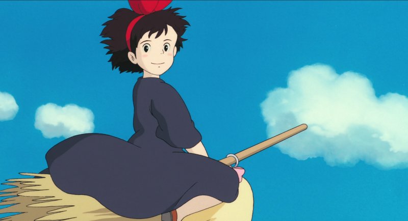

NEWS/STORY/CHARACTER/MOVIE/REVIEW
INTRODUCTION

「おちこんだりもしたけれど、私はげんきです。」
낙담하거나 슬럼프에 빠지기도 하지만, 저는 건강하게 잘 지내고 있습니다.
✧･ﾟ: *✧･ﾟ:* *:･ﾟ✧*:･ﾟ✧
어린 마녀 키키가 자립하는 내용을 다룬 작품이다.
만 13세가 된 수습 마녀는 어엿한 마녀가 되기 위해서 다른 마을에 가서 1년 동안 부모를 떠나 자립해서 수행해야 한다.
키키도 마찬가지로 만 13세가 되자 마녀가 없는 마을을 찾아 여행을 떠나고, 대도시에 도착한다.
하지만 그곳에 마녀를 반겨주는 사람은 없었고 키키는 풀죽어 마을을 헤매다,
마음씨 좋은 빵집 주인 오소노를 만나고 그곳에서 살면서 빗자루 타는 능력을 활용해 택배 사업을 시작한다.
한편, 하늘을 나는 것에 관심이 많은 소년 코포리와 자상한 성격의 할머니,
자유분방한 여성 화가 우르술라 등을 만나면서 키키는 점점 성장해 나가는데……
만 13세가 된 수습 마녀는 어엿한 마녀가 되기 위해서 다른 마을에 가서 1년 동안 부모를 떠나 자립해서 수행해야 한다.
키키도 마찬가지로 만 13세가 되자 마녀가 없는 마을을 찾아 여행을 떠나고, 대도시에 도착한다.
하지만 그곳에 마녀를 반겨주는 사람은 없었고 키키는 풀죽어 마을을 헤매다,
마음씨 좋은 빵집 주인 오소노를 만나고 그곳에서 살면서 빗자루 타는 능력을 활용해 택배 사업을 시작한다.
한편, 하늘을 나는 것에 관심이 많은 소년 코포리와 자상한 성격의 할머니,
자유분방한 여성 화가 우르술라 등을 만나면서 키키는 점점 성장해 나가는데……